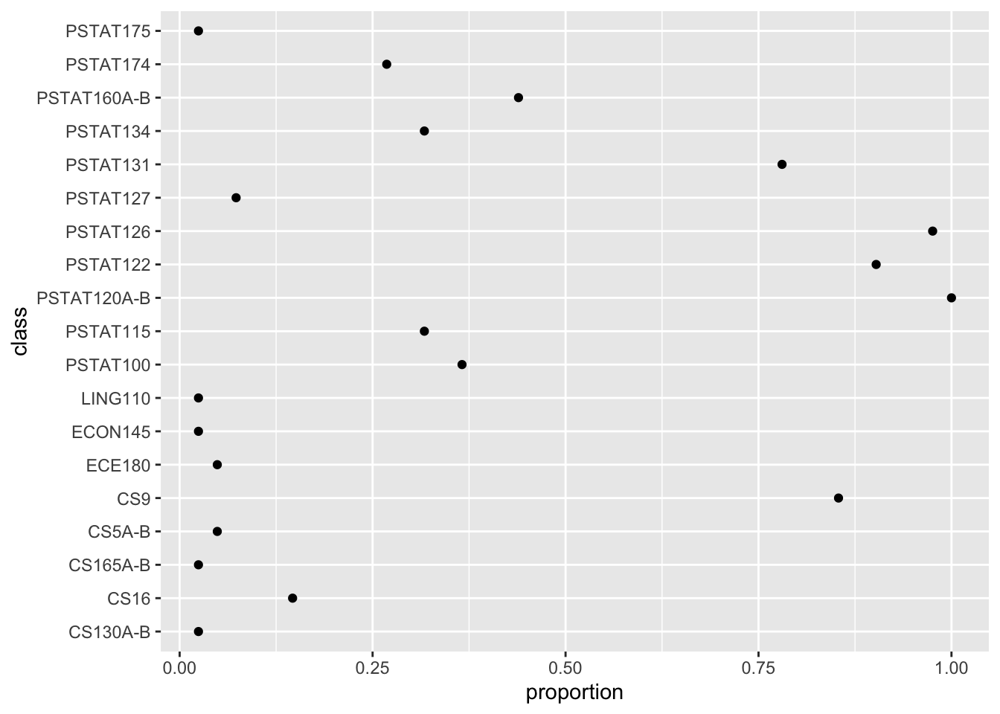
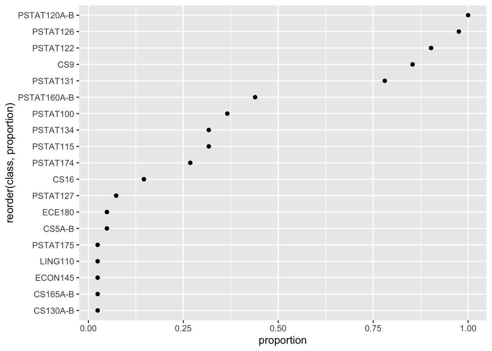
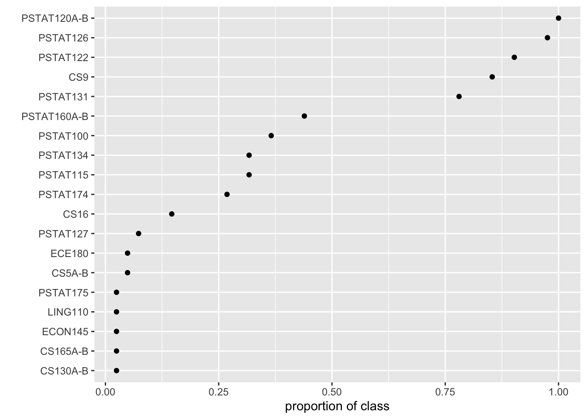

# a number
4.5[1] 4.5# check structure
str(4.5) num 4.5# stored as double
is.double(4.5)[1] TRUERead through the R Basics section and then complete all actions in the Tidyverse basics section. This lab is for your own benefit and no submission is expected.
Objectives:
Review R basics (data types and object classes);
introduce core tidyverse libraries (dplyr, tidyr, and ggplot);
replicate portions of in-class analysis of class survey data
Here we’ll cover some bare essentials in R. You can find a more thorough introduction in MSDR Appendix B.
There are five main data types in R.
Numeric (double- or single-precision floating point) data represent real numbers. Numeric data are abbreviated num and by default are stored as double-precision floating point.
# a number
4.5[1] 4.5# check structure
str(4.5) num 4.5# stored as double
is.double(4.5)[1] TRUEInteger data are integers. For the most part they behave like numeric data, except they occupy less memory, which can in some cases be convenient. To distinguish integers from doubles, R uses a trailing L after values; the data type is abbreviated int.
# an integer
4L[1] 4# check structure
str(4L) int 4Logical data are binary and represented in R as having values TRUE and FALSE. They are abbreviated logi in R. Often they are automatically coerced to integer data with values 0 (false) and 1 (true) to perform arithmetic and other operations.
# logical value
TRUE[1] TRUE# check structure
str(TRUE) logi TRUE# arithmetic
TRUE + FALSE[1] 1# check structure
str(FALSE + FALSE) int 0Character data represent strings of text and are sometimes called ‘strings’. They are abbreviated chr in R and values are surrounded by quotation marks; this distinguishes, for example, the character 4 from the number 4. Single quotations can be used to input strings as well as double quotations. Arithmetic is not possible with strings for obvious reasons.
# a character string
'yay'[1] "yay"# check structure
str('yay') chr "yay"# string arithmetic won't work
'4' + '1'Error in "4" + "1": non-numeric argument to binary operator# but can be performed after coercing character to string
as.numeric('4') + as.numeric('1')[1] 5Factor data represent categorical variables. In R these are encoded numerically according to the number of ‘levels’ of the factor, which represent the unique values of the categorical variable, and each level is labeled. R will print the labels, not the levels, of factors; the data type is abbreviated fct.
# a factor
factor(1, levels = c(1, 2), labels = c('blue', 'red'))[1] blue
Levels: blue red# less verbose definition
factor('blue', levels = c('blue', 'red'))[1] blue
Levels: blue red# check structure
str(factor('blue', levels = c('blue', 'red'))) Factor w/ 2 levels "blue","red": 1Usually factors won’t be defined explicitly, but instead interpreted from character data. The levels and labels of factors can be manipulated using a variety of helper functions.
The most basic type of object in R is a vector. Vectors are concatenations of data values of the same type. They are defined using the concatenation operator c() and are indexed by consecutive integers; subvectors can be retrieved by specifying the indices between square brackets.
# numeric vector
c(1, 4, 7)[1] 1 4 7# character vector
c('blue', 'red')[1] "blue" "red" # indexing
c(1, 4, 7)[1][1] 1c(1, 4, 7)[2][1] 4c(1, 4, 7)[3][1] 7c(1, 4, 7)[2:3][1] 4 7c(1, 4, 7)[c(1, 3)][1] 1 7Usually objects are assigned names for easy retrieval. Vectors will not show any special object class if the structure is examined; str() will simply return the data type, index range, and the values.
# assign a name
my_vec <- c(1, 4, 7)
# check structure
str(my_vec) num [1:3] 1 4 7Next up in complexity are arrays. These are blocks of data values of the same type indexed along two or more dimensions. For arrays, str() will return the data type, index structure, and data values; when printed directly, data values are arranged according to the indexing.
# an array
my_ary <- array(data = c(1, 2, 3, 4, 5, 6, 7, 8),
dim = c(2, 4))
my_ary [,1] [,2] [,3] [,4]
[1,] 1 3 5 7
[2,] 2 4 6 8str(my_ary) num [1:2, 1:4] 1 2 3 4 5 6 7 8# another array
my_oth_ary <- array(data = c(1, 2, 3, 4, 5, 6, 7, 8),
dim = c(2, 2, 2))
my_oth_ary, , 1
[,1] [,2]
[1,] 1 3
[2,] 2 4
, , 2
[,1] [,2]
[1,] 5 7
[2,] 6 8str(my_oth_ary) num [1:2, 1:2, 1:2] 1 2 3 4 5 6 7 8For arrays, elements can be retrieved by index coordinates, and slices can be retrieved by leaving index positions blank, which will return all elements along the corresponding indices.
# one element
my_ary[1, 2][1] 3# one element
my_oth_ary[1, 2, 1][1] 3# a slice (second row)
my_ary[2, ][1] 2 4 6 8# a slice (first layer)
my_oth_ary[ , , 1] [,1] [,2]
[1,] 1 3
[2,] 2 4Next there are lists, which are perhaps the most flexible data structure. A list is an indexed collection of any objects.
# a list
list('cat', c(1, 4, 7), TRUE)[[1]]
[1] "cat"
[[2]]
[1] 1 4 7
[[3]]
[1] TRUE# a named list
list(animal = 'cat',
numbers = c(1, 4, 7),
short = TRUE)$animal
[1] "cat"
$numbers
[1] 1 4 7
$short
[1] TRUEList elements can be retrieved by index in double square brackets, or by name.
# assign a name
my_lst <- list(animal = 'cat',
numbers = c(1, 4, 7),
short = TRUE)
# check structure
str(my_lst)List of 3
$ animal : chr "cat"
$ numbers: num [1:3] 1 4 7
$ short : logi TRUE# retrieve an element
my_lst[[1]][1] "cat"# equivalent
my_lst$animal[1] "cat"Finally, data frames are type-heterogeneous lists of vectors of equal length. More informally, they are 2D arrays with columns of differing data types. str() will essentially show the list structure; but when printed, data frames will appear arranged in a table.
# a data frame
my_df <- data.frame(animal = c('cat', 'hare', 'tortoise'),
has.fur = c(TRUE, TRUE, FALSE),
weight.lbs = c(9.1, 8.2, 22.7))
str(my_df)'data.frame': 3 obs. of 3 variables:
$ animal : chr "cat" "hare" "tortoise"
$ has.fur : logi TRUE TRUE FALSE
$ weight.lbs: num 9.1 8.2 22.7my_df animal has.fur weight.lbs
1 cat TRUE 9.1
2 hare TRUE 8.2
3 tortoise FALSE 22.7The data frame is the standard object type for representing datasets in R. For the most part, modern computing in R is designed around the data frame.
R packages are add-ons that can include special functions, datasets, object classes, and the like. They are published software and can be installed using install.packages('PACKAGE NAME') and, once installed, loaded via library('PACKAGE NAME') or require('PACKAGE NAME').
We will illustrate the use of tidyverse functions to reproduce the analysis shown in class of the survey data.
Load class survey data
library(tidyverse)
# retrieve class survey data
url <- 'data/'
background <- paste(url, 'background-clean.csv', sep = '') %>%
read_csv()
interest <- paste(url, 'interest-clean.csv', sep = '') %>%
read_csv()
metadata <- paste(url, 'survey-metadata.csv', sep = '') %>%
read_csv()You can view the data in one of two ways:
# print the data frame for inspection in the console
background# A tibble: 41 × 30
response.id prog.prof prog.comf math.prof math.comf stat.prof stat.comf
<dbl> <chr> <dbl> <chr> <dbl> <chr> <dbl>
1 2 Adv 5 Adv 4 Adv 5
2 3 Int 4 Adv 5 Adv 5
3 4 Adv 4 Adv 4 Adv 5
4 5 Adv 5 Adv 5 Adv 4
5 6 Int 4 Adv 5 Adv 5
6 7 Int 4 Int 3 Int 3
7 8 Adv 5 Adv 4 Adv 4
8 9 Int 4 Int 4 Adv 5
9 10 Int 4 Int 3 Int 4
10 11 Int 3 Adv 3 Adv 4
# ℹ 31 more rows
# ℹ 23 more variables: updv.num <chr>, dom <chr>, consent <chr>,
# `PSTAT120A-B` <chr>, PSTAT122 <chr>, PSTAT126 <chr>, PSTAT131 <chr>,
# PSTAT134 <chr>, `PSTAT160A-B` <chr>, CS9 <chr>, PSTAT100 <chr>,
# PSTAT174 <chr>, PSTAT115 <chr>, PSTAT127 <chr>, CS16 <chr>, ECE180 <chr>,
# `CS5A-B` <chr>, PSTAT175 <chr>, `CS130A-B` <chr>, `CS165A-B` <chr>,
# LING110 <chr>, ECON145 <chr>, rsrch <lgl># open as a spreadsheet in a separate viewer
view(background)Open the metadata in the viewer and have a look. Take a moment to inspect the datasets.
The tidyverse is a collection of packages for data manipulation, visualization, and statistical modeling. Some are specialized, such as forcats or lubridate, which contain functions for manipulating factors and dates and times, respectively. The packages share some common underyling principles.
%>%The tidyverse facilitates programming in readable sequences of steps that are performed on dataframe. For example:
my_df %>% STEP1() %>% STEP2() %>% STEP3()If it helps, imagine that step 1 is defining a new variable, step 2 is selecting a subset of columns, and step 3 is fitting a model of some kind.
tidyverse packages leverage a slight generalization of the data frame called a tibble. For the most part, tibbles behave as data frames do, but they are slightly more flexible in ways you’ll encounter later.
For now, think of a tibble as just another name for a data frame.
%>%In short, x %>% f(y) is equivalent to f(x, y) .
In other words, the pipe operator ‘pipes’ the result of the left-hand operation into the first argument of the right-hand function.
# a familiar example
my_vec <- c(1, 2, 5)
str(my_vec) num [1:3] 1 2 5# use the pipe operator instead
my_vec %>% str() num [1:3] 1 2 5The dplyr package contains functions for manipulating data frames (tibbles). The functions are named with verbs that describe common operations.
For each verb listed below, copy the code chunk into your script and execute.
Go through the list with your neighbor and check your understanding by describing what the code example accomplishes.
filter – filter the rows of a data frame according to a condition and return a subset of rows meeting that condition
# filter rows
background %>%
filter(math.comf > 3)# A tibble: 25 × 30
response.id prog.prof prog.comf math.prof math.comf stat.prof stat.comf
<dbl> <chr> <dbl> <chr> <dbl> <chr> <dbl>
1 2 Adv 5 Adv 4 Adv 5
2 3 Int 4 Adv 5 Adv 5
3 4 Adv 4 Adv 4 Adv 5
4 5 Adv 5 Adv 5 Adv 4
5 6 Int 4 Adv 5 Adv 5
6 8 Adv 5 Adv 4 Adv 4
7 9 Int 4 Int 4 Adv 5
8 13 Int 4 Adv 5 Int 4
9 14 Int 4 Adv 5 Int 4
10 15 Int 3 Adv 4 Adv 4
# ℹ 15 more rows
# ℹ 23 more variables: updv.num <chr>, dom <chr>, consent <chr>,
# `PSTAT120A-B` <chr>, PSTAT122 <chr>, PSTAT126 <chr>, PSTAT131 <chr>,
# PSTAT134 <chr>, `PSTAT160A-B` <chr>, CS9 <chr>, PSTAT100 <chr>,
# PSTAT174 <chr>, PSTAT115 <chr>, PSTAT127 <chr>, CS16 <chr>, ECE180 <chr>,
# `CS5A-B` <chr>, PSTAT175 <chr>, `CS130A-B` <chr>, `CS165A-B` <chr>,
# LING110 <chr>, ECON145 <chr>, rsrch <lgl>select – select a subset of columns from a data frame
# select a column
background %>%
select(math.comf)# A tibble: 41 × 1
math.comf
<dbl>
1 4
2 5
3 4
4 5
5 5
6 3
7 4
8 4
9 3
10 3
# ℹ 31 more rowspull – extract a single column from a data frame
# pull a column
background %>%
pull(rsrch) [1] TRUE FALSE TRUE FALSE FALSE TRUE TRUE FALSE FALSE FALSE FALSE FALSE
[13] FALSE FALSE TRUE FALSE TRUE FALSE TRUE FALSE FALSE FALSE FALSE FALSE
[25] FALSE TRUE TRUE FALSE TRUE TRUE FALSE TRUE TRUE TRUE FALSE FALSE
[37] FALSE FALSE TRUE FALSE TRUEmutate – define a new column as a function of existing columns
# define a new variable
background %>%
mutate(avg.comf = (math.comf + prog.comf + stat.comf)/3)# A tibble: 41 × 31
response.id prog.prof prog.comf math.prof math.comf stat.prof stat.comf
<dbl> <chr> <dbl> <chr> <dbl> <chr> <dbl>
1 2 Adv 5 Adv 4 Adv 5
2 3 Int 4 Adv 5 Adv 5
3 4 Adv 4 Adv 4 Adv 5
4 5 Adv 5 Adv 5 Adv 4
5 6 Int 4 Adv 5 Adv 5
6 7 Int 4 Int 3 Int 3
7 8 Adv 5 Adv 4 Adv 4
8 9 Int 4 Int 4 Adv 5
9 10 Int 4 Int 3 Int 4
10 11 Int 3 Adv 3 Adv 4
# ℹ 31 more rows
# ℹ 24 more variables: updv.num <chr>, dom <chr>, consent <chr>,
# `PSTAT120A-B` <chr>, PSTAT122 <chr>, PSTAT126 <chr>, PSTAT131 <chr>,
# PSTAT134 <chr>, `PSTAT160A-B` <chr>, CS9 <chr>, PSTAT100 <chr>,
# PSTAT174 <chr>, PSTAT115 <chr>, PSTAT127 <chr>, CS16 <chr>, ECE180 <chr>,
# `CS5A-B` <chr>, PSTAT175 <chr>, `CS130A-B` <chr>, `CS165A-B` <chr>,
# LING110 <chr>, ECON145 <chr>, rsrch <lgl>, avg.comf <dbl>These operations can be chained together, for example:
# sequence of verbs
background %>%
filter(stat.prof == 'Adv') %>%
mutate(avg.comf = (math.comf + prog.comf + stat.comf)/3) %>%
select(avg.comf, rsrch) # A tibble: 23 × 2
avg.comf rsrch
<dbl> <lgl>
1 4.67 TRUE
2 4.67 FALSE
3 4.33 TRUE
4 4.67 FALSE
5 4.67 FALSE
6 4.33 TRUE
7 4.33 FALSE
8 3.33 FALSE
9 3.67 FALSE
10 4.33 TRUE
# ℹ 13 more rowsSummaries are easily computed across rows using summarize() . So if for example we want to use the filtering and selection from before to find the proportion of advanced students in statistics with research experience, use:
# a summary
background %>%
filter(stat.prof == 'Adv') %>%
mutate(avg.comf = (math.comf + prog.comf + stat.comf)/3) %>%
select(avg.comf, rsrch) %>%
summarize(prop.rsrch = mean(rsrch))# A tibble: 1 × 1
prop.rsrch
<dbl>
1 0.391# equivalent
background %>%
filter(stat.prof == 'Adv') %>%
mutate(avg.comf = (math.comf + prog.comf + stat.comf)/3) %>%
select(avg.comf, rsrch) %>%
pull(rsrch) %>%
mean()[1] 0.3913043The advantage of summarize , however, is that multiple summaries can be computed at once:
background %>%
filter(stat.prof == 'Adv') %>%
mutate(avg.comf = (math.comf + prog.comf + stat.comf)/3) %>%
select(avg.comf, rsrch) %>%
summarize(prop.rsrch = mean(rsrch),
med.comf = median(avg.comf))# A tibble: 1 × 2
prop.rsrch med.comf
<dbl> <dbl>
1 0.391 4.33The variant summarize_all computes the same summary across all columns. (Notice the use of the helper verb contains() to select all columns containing a particular string.)
# average comfort levels across all students
background %>%
select(contains('comf')) %>%
summarise_all(.funs = mean)# A tibble: 1 × 3
prog.comf math.comf stat.comf
<dbl> <dbl> <dbl>
1 3.85 3.80 3.98Grouped summaries are summaries computed separately among subsets of observations. To define a grouping structure using an existing column, use group_by() . Notice the ‘groups’ attribute printed with the output.
# create a grouping
background %>%
group_by(stat.prof)# A tibble: 41 × 30
# Groups: stat.prof [2]
response.id prog.prof prog.comf math.prof math.comf stat.prof stat.comf
<dbl> <chr> <dbl> <chr> <dbl> <chr> <dbl>
1 2 Adv 5 Adv 4 Adv 5
2 3 Int 4 Adv 5 Adv 5
3 4 Adv 4 Adv 4 Adv 5
4 5 Adv 5 Adv 5 Adv 4
5 6 Int 4 Adv 5 Adv 5
6 7 Int 4 Int 3 Int 3
7 8 Adv 5 Adv 4 Adv 4
8 9 Int 4 Int 4 Adv 5
9 10 Int 4 Int 3 Int 4
10 11 Int 3 Adv 3 Adv 4
# ℹ 31 more rows
# ℹ 23 more variables: updv.num <chr>, dom <chr>, consent <chr>,
# `PSTAT120A-B` <chr>, PSTAT122 <chr>, PSTAT126 <chr>, PSTAT131 <chr>,
# PSTAT134 <chr>, `PSTAT160A-B` <chr>, CS9 <chr>, PSTAT100 <chr>,
# PSTAT174 <chr>, PSTAT115 <chr>, PSTAT127 <chr>, CS16 <chr>, ECE180 <chr>,
# `CS5A-B` <chr>, PSTAT175 <chr>, `CS130A-B` <chr>, `CS165A-B` <chr>,
# LING110 <chr>, ECON145 <chr>, rsrch <lgl>Sometimes it can be helpful to simply count the observations in each group:
# count observations
background %>%
group_by(stat.prof) %>%
count()# A tibble: 2 × 2
# Groups: stat.prof [2]
stat.prof n
<chr> <int>
1 Adv 23
2 Int 18To compute a grouped summary, first group the data frame and then specify the summary of interest:
# a grouped summary
background %>%
group_by(stat.prof) %>%
select(contains('.comf')) %>%
summarize_all(.funs = mean)# A tibble: 2 × 4
stat.prof prog.comf math.comf stat.comf
<chr> <dbl> <dbl> <dbl>
1 Adv 4 4.17 4.43
2 Int 3.67 3.33 3.39Grouped summaries
In general, tidyr verbs reshape data frames in various ways. For now, we’ll just cover two tidyr verbs.
Suppose we want to calculate multiple summaries of multiple variables using the techniques above. By default, the output is one row with one column for each summary/variable combination:
# many variables, many summaries
comf_sum <- background %>%
select(contains('comf')) %>%
summarise_all(.funs = list(mean = mean,
median = median,
min = min,
max = max))
comf_sum# A tibble: 1 × 12
prog.comf_mean math.comf_mean stat.comf_mean prog.comf_median math.comf_median
<dbl> <dbl> <dbl> <dbl> <dbl>
1 3.85 3.80 3.98 4 4
# ℹ 7 more variables: stat.comf_median <dbl>, prog.comf_min <dbl>,
# math.comf_min <dbl>, stat.comf_min <dbl>, prog.comf_max <dbl>,
# math.comf_max <dbl>, stat.comf_max <dbl>It would be much better to reshape this into a table. gather will reshape the data frame from wide format to long format by ‘gathering’ the columns together.
# gather columns into long format
comf_sum %>% gather(stat, val) # A tibble: 12 × 2
stat val
<chr> <dbl>
1 prog.comf_mean 3.85
2 math.comf_mean 3.80
3 stat.comf_mean 3.98
4 prog.comf_median 4
5 math.comf_median 4
6 stat.comf_median 4
7 prog.comf_min 2
8 math.comf_min 2
9 stat.comf_min 2
10 prog.comf_max 5
11 math.comf_max 5
12 stat.comf_max 5 This is a little better, but it would be more legible in a 2x2 table. We can separate the ‘stat’ variable that has the column names into two columns:
# separate into rows and columns
comf_sum %>%
gather(stat, val) %>%
separate(stat, into = c('variable', 'stat'), sep = '_') # A tibble: 12 × 3
variable stat val
<chr> <chr> <dbl>
1 prog.comf mean 3.85
2 math.comf mean 3.80
3 stat.comf mean 3.98
4 prog.comf median 4
5 math.comf median 4
6 stat.comf median 4
7 prog.comf min 2
8 math.comf min 2
9 stat.comf min 2
10 prog.comf max 5
11 math.comf max 5
12 stat.comf max 5 And then spread the stat column over a few rows, resulting in a table where the rows are the variables and the columns are the summaries:
# spread into table
comf_sum %>%
gather(stat, val) %>%
separate(stat, into = c('variable', 'stat'), sep = '_') %>%
spread(stat, val)# A tibble: 3 × 5
variable max mean median min
<chr> <dbl> <dbl> <dbl> <dbl>
1 math.comf 5 3.80 4 2
2 prog.comf 5 3.85 4 2
3 stat.comf 5 3.98 4 2The ggplot package is for data visualization. The syntax takes some getting used to if you haven’t seen it before. We’ll just look at one example.
Suppose we want to summarize the prior coursework in the class.
# summary of classes taken
classes <- background %>%
select(11:29) %>%
mutate_all(~factor(.x, levels = c('no', 'yes'))) %>%
mutate_all(~as.numeric(.x) - 1) %>%
summarize_all(mean) %>%
gather(class, proportion)
classes# A tibble: 19 × 2
class proportion
<chr> <dbl>
1 PSTAT120A-B 1
2 PSTAT122 0.902
3 PSTAT126 0.976
4 PSTAT131 0.780
5 PSTAT134 0.317
6 PSTAT160A-B 0.439
7 CS9 0.854
8 PSTAT100 0.366
9 PSTAT174 0.268
10 PSTAT115 0.317
11 PSTAT127 0.0732
12 CS16 0.146
13 ECE180 0.0488
14 CS5A-B 0.0488
15 PSTAT175 0.0244
16 CS130A-B 0.0244
17 CS165A-B 0.0244
18 LING110 0.0244
19 ECON145 0.0244We could report the results in a table, in which case perhaps arranging in descending order may be helpful:
classes %>% arrange(desc(proportion))# A tibble: 19 × 2
class proportion
<chr> <dbl>
1 PSTAT120A-B 1
2 PSTAT126 0.976
3 PSTAT122 0.902
4 CS9 0.854
5 PSTAT131 0.780
6 PSTAT160A-B 0.439
7 PSTAT100 0.366
8 PSTAT134 0.317
9 PSTAT115 0.317
10 PSTAT174 0.268
11 CS16 0.146
12 PSTAT127 0.0732
13 ECE180 0.0488
14 CS5A-B 0.0488
15 PSTAT175 0.0244
16 CS130A-B 0.0244
17 CS165A-B 0.0244
18 LING110 0.0244
19 ECON145 0.0244Let’s say we’d rather plot this data. We’ll put the course number on one axis and the proportion of students who took it on the other.
# plot it
classes %>%
ggplot(aes(x = proportion, y = class)) +
geom_point()
These commands work by defining plot layers. In the chunk above, the first argument to ggplot() is the data. Then, aes() defines an ‘aesthetic mapping’ of the columns of the input data frame to graphical elements. This defines a set of axes. Then, a layer of points is added to the plot with geom_point() ; no arguments are needed because the geometric object (‘geom’) inherits attributes (x and y coordinates) from the aesthetic mapping.
Again we might prefer to arrange the classes by descending order in proportion.
fig <- classes %>%
ggplot(aes(x = proportion, y = reorder(class, proportion))) +
geom_point()
fig
And perhaps fix the plot labels:
# adjust labels
fig + labs(x = 'proportion of class', y = '')
Notice that ggplot allows for a plot to be stored by name and then further modified with additional layers.